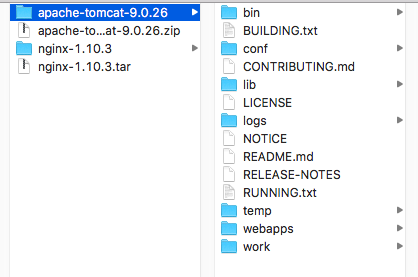
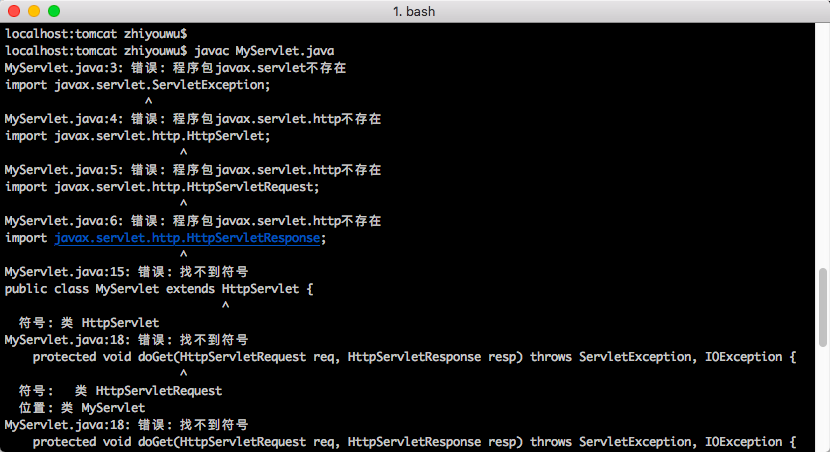
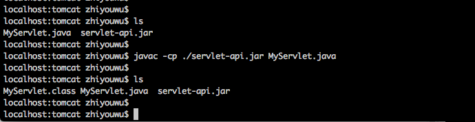
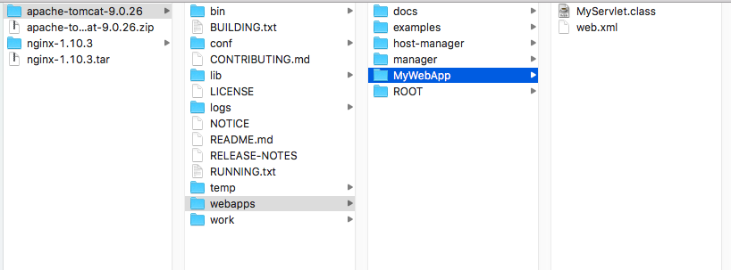
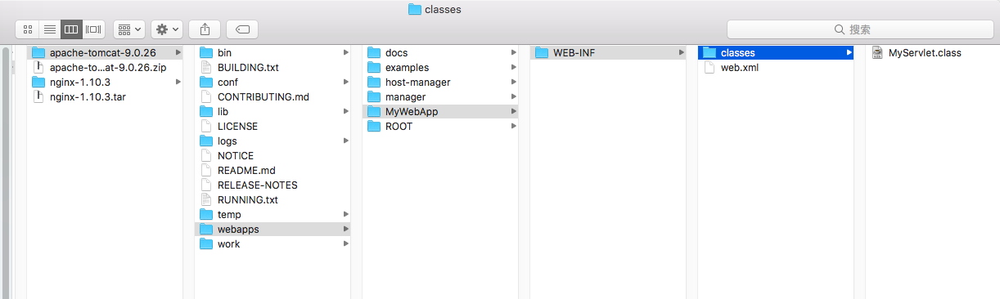
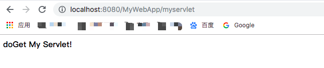
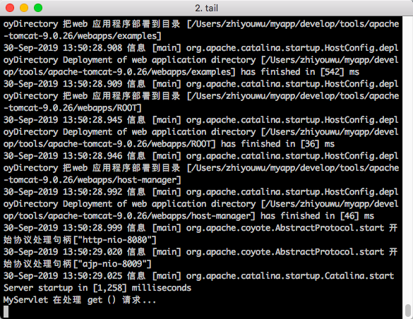

原文连接:https://www.cnblogs.com/zhiyouwu/p/11612523.html
Servlet与Tomcat运行示例
本文将写一个servlet，然后将其部署到Tomcat的全过程。本文参考《深入拆解Tomcat_Jetty》内容。
一、基于web.xml开发步骤
- 下载、安装 Tomcat。
- 编写一个继承 HTTPServlet 的 Java 类MyServlet。
- 将 Java 类文件编译成 Class 文件。
- 建立 Web 应用的目录结构，并配置 web.xml。
- 部署 Web 应用。
- 启动 Tomcat。
- 浏览器访问验证结果。
- 查看 Tomcat 日志。
1 下载、安装Tomcat
去Tomcat官网（https://tomcat.apache.org/download-90.cgi） 下载最新的Tomcat（需下载对应系统版本，请根据实际情况选择，本文以MacOS系统为例）。下载完成之后解压即可。

2 编写MyServlet类
编写一个MyServlet类，其继承HttpServlet类，并复写其doGet()和doPost()方法。
import javax.servlet.ServletException;
import javax.servlet.http.HttpServlet;
import javax.servlet.http.HttpServletRequest;
import javax.servlet.http.HttpServletResponse;
import java.io.IOException;
import java.io.PrintWriter;
/**
* @Version V1.0
* @Description: MyServlet 类
*/
public class MyServlet extends HttpServlet {
@Override
protected void doGet(HttpServletRequest req, HttpServletResponse resp) throws ServletException, IOException {
System.out.println("MyServlet 在处理 get（）请求...");
PrintWriter out = resp.getWriter();
resp.setContentType("text/html;charset=utf-8");
out.println("<strong>doGet My Servlet!</strong><br>");
}
@Override
protected void doPost(HttpServletRequest req, HttpServletResponse resp) throws ServletException, IOException {
System.out.println("MyServlet 在处理 post（）请求...");
PrintWriter out = resp.getWriter();
resp.setContentType("text/html;charset=utf-8");
out.println("<strong>doPost My Servlet!</strong><br>");
}
}
3 编译MyServlet
因为这里我们不采用IDE的方式，所以在编译MyServlet.java类时，我们使用javac的命令。但是我们需要注意，因为我们在MyServlet类中继承了HttpServlet，而HttpServlet并不是jdk自带的class，所以需要带上HttpServlet所在的jar包一起进行打包！不然会出现以下错误信息：

我们先将Tomcat解压目录 lib/下的servlet-api.jar拷贝到MyServlet.java同级目录，然后执行以下命令，即可将MyServlet进行编译：
javac -cp ./servlet-api.jar MyServlet.java
4 建立 Web 应用目录
创建文件夹，也就是项目工程 MyWebApp， 其目录主要如下：
MyWebApp/WEB-INF/web.xml
MyWebApp/WEB-INF/classes/MyServlet.class其中，web.xml的内容如下：
<?xml version="1.0" encoding="UTF-8"?>
<web-app xmlns="http://xmlns.jcp.org/xml/ns/javaee"
xmlns:xsi="http://www.w3.org/2001/XMLSchema-instance"
xsi:schemaLocation="http://xmlns.jcp.org/xml/ns/javaee
http://xmlns.jcp.org/xml/ns/javaee/web-app_4_0.xsd"
version="4.0"
metadata-complete="true">
<description> Servlet Example. </description>
<display-name> MyServlet Example </display-name>
<request-character-encoding>UTF-8</request-character-encoding>
<servlet>
<servlet-name>myServlet</servlet-name>
<servlet-class>MyServlet</servlet-class>
</servlet>
<servlet-mapping>
<servlet-name>myServlet</servlet-name>
<url-pattern>/myservlet</url-pattern>
</servlet-mapping>
</web-app>5 部署 MyWebApp 应用
将这个目录 MyWebApp 拷贝到 Tomcat 的安装目录下的 webapps 目录：

6 启动 Tomcat
找到 Tomcat 安装目录下的 bin 目录，如果是 Windows 系统，执行 startup.bat；如果是 Linux 系统，则执行 startup.sh

7 浏览器访问
在浏览器里访问这个 URL： http://localhost:8080/MyWebApp/myservlet

同样，post方式调用也会得到相类似的结果！
8 查看 Tomcat 日志
我们可以看下tomcat/logs下的catalina.out文件，使用以下命令查看相应的日志：
tail -100f catalina.out
二、基于注解@WebServlet开发
步骤基本上同上述基于web.xml一致，有以下几点不同之处！
1 不同之处1： MyServlet类的代码
在MyServlet上添加@WebServlet代码，具体如下：
import javax.servlet.ServletException;
import javax.servlet.annotation.WebServlet;
import javax.servlet.http.HttpServlet;
import javax.servlet.http.HttpServletRequest;
import javax.servlet.http.HttpServletResponse;
import java.io.IOException;
import java.io.PrintWriter;
/**
* @Version V1.0
* @Description: MyServlet 类
*/
@WebServlet("/myAnnotationServlet")
public class MyServlet extends HttpServlet {
@Override
protected void doGet(HttpServletRequest req, HttpServletResponse resp) throws ServletException, IOException {
System.out.println("MyServlet 在处理 get（）请求...");
PrintWriter out = resp.getWriter();
resp.setContentType("text/html;charset=utf-8");
out.println("<strong>doGet My Servlet!</strong><br>");
}
@Override
protected void doPost(HttpServletRequest req, HttpServletResponse resp) throws ServletException, IOException {
System.out.println("MyServlet 在处理 post（）请求...");
PrintWriter out = resp.getWriter();
resp.setContentType("text/html;charset=utf-8");
out.println("<strong>doPost My Servlet!</strong><br>");
}
}
2 不同之处2: 去除web.xml配置
MyWebApp项目下不需要再配置web.xml，因为在注解中已经对其进行了相关的配置。
3 不同之处3: 访问地址变化
因为在@WebServlet中配置了的路径为/myAnnotationServlet，故而此处访问路径应为：
http://localhost:8080/MyWebApp/myAnnotationServlet
剩下步骤与基于web.xml配置基本一致，不再细述！后期将就本案例讲解分析Tomcat是如何加载并运行此Servlet的！
微信公众号： 源码湾
欢迎关注本人微信公众号： 源码湾。 本公众号将不定期进行相关源码及相关开发技术的分享，共同成长，共同进步～

Blog:
- 简书： https://www.jianshu.com/u/91378a397ffe
- csdn： https://blog.csdn.net/ZhiyouWu
- 开源中国： https://my.oschina.net/u/3204088
- 掘金： https://juejin.im/user/5b5979efe51d451949094265
- 博客园： https://www.cnblogs.com/zhiyouwu/
- 微信公众号： 源码湾
- 微信： WZY1782357529 (欢迎沟通交流)